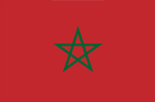

국기
- 종교 | 이슬람교, 기독교
- 화폐 | 모로코 디르함(MAD)
- 언어 | 아랍어, 베르베르어, 불어(상용)
- 정치 | 입헌군주제
- 인구수 | 3777만
역사
페니키아인과 카르타고인이 해안에 거점을 만들고 로마인도 한때 모리타니 부근의 해안지대를 지배하였다.
아라비아에서 진출해 온 이슬람교의 군대가 모로코를 정복한 685년 이후 베르베르족도 이슬람화되어 711년
에스파냐를 공격하였다.
740년경부터 소왕국으로 분열되었으나 788년 이드리스 왕조가 통일하였다.
11세기에 알모라미드왕조가 마라케시를 수도로 에스파냐에서 세네갈강에 이르는 광대한 제국을 건설하였으나
12세기에 알모하드왕조로 교체되었다. 그러나 13세기에 들어 에스파냐에서 그리스도교도에게 패배한 이 왕조는
쇠퇴하고 메리니드왕조가 뒤를 이었다가 15세기 후반부터 16세기 중엽에 걸쳐 와타시드왕조가 지배하였다.
이 시대에는 에스파냐와 포르투갈의 침략을 받았고 오스만투르크의 압력에도 저항하였다.
#마라케시
- 특징 |
- 기후 |
- 교통 |
롯데월드 어드벤처에 있는 후룸라이드의 영어 명칭은 초기에 이 도시에서 이름을 따 온 Marrakesh Express였다. 롯데월드 측에서 후룸라이드가 모로코거리에 있었다고 이런 이름을 붙였다고 한다.
날씨가 비교적 선선하고 온화하다. 겨울 낮 기온이 15~20도에 이르러 따뜻하지만 비가 많이 내리며, 여름인 6~8월까지는 약 37도에 육박하는 뜨거운 날씨가 계속 된다.
모로코 내 철도간선의 남방 한계지이며, 시계외에 마라케시 메나라 국제공항 또한 위치해 있다. 도시 간 도로 또한 편리하다.
- 역사 |
- 관광 |
무라비트 왕조의 수도로 백년 동안 기능했으며, 이후 설립된 무와히드 왕조와 사드 왕조 역시 이곳을 수도로 삼았던 덕에 아직까지도 그 때의 번영상이 많이 남아있다. 구 시가지장은 아예 전체가 유네스코 문화유산으로 지정되어 있을 정도이다. 또한 인종상으로 아랍계와 베르베르계가 거의 반반씩 공존하고 있다.
모로코 관광에서 빠뜨리면 안 되는 도시로 손꼽힌다.
그만큼 호텔과 식당, 카페 등도 많고 관광객들도 매우 많다.
주요 관광지로는 자마 엘 프나 시장, 메디나, 쿠투비아 모스크, 야자나무 숲,
아르간 나무, 사디안 묘, 바히야 궁전, 다르 시 사이드 박물관 등이 있다.
#카사블랑카
- 특징 |
- 기후 |
모로코의 주요한 항구이자 마그레브 내에서도 가장 큰 도시이며, 아프리카 대륙에서는 여섯 번째로 큰 도시이다.
지중해성 기후를 나타낸다.
일 년 내내 휴가를 즐길 수 있지만 쾌적한 여행하기에 가장 좋은 최적기는 3~8월이다.
특히 3~5월에는 대부분의 박물관과 유적지가 여름철에 비해 덜 붐비고 온화한 날씨가 계속되고,
겨울 낮 기온이 15~20도에 이르러 따뜻하지만 비가 많이 내린다.
일교차도 꽤 있다.
- 관광 |
- 교통 |
하산 2세 모스크
카사블랑카 뉴 메디나
모하메드 5세 광장
사크레쾨르 대성당
카사블랑카 등대
빌라 데자르
카사블랑카 트위 센터
국내의 최대 도시인 만큼 모든 교통수단의 중심지이다. 트램이 시내 곳곳을 이어준다.
시내에 여러 철도역이 있으며, 시내및 항구 가까이 위치한 카사-포트역과 중심지에서는 조금 떨어진 카사-보야저역이 있다.
이 두개역을 합하면 모로코 국내 거의 모든 철도역을 갈 수 있다.
찜행지 추가

모로코 여행 기록 구경하기

2022.4.12
2022.4.12
2022.4.12
2022.4.12
2022.4.12
2022.4.12
2022.4.12
2022.4.12
모로코 여행 팁
유리심장

가이드 설명을 들으면서 여행하면 더욱 재미있는 여행이 될 수 있어요. 특히 박물관은 가이드 필수!
가영이 여행가영
로마 여행갈 때는 꼭 편한 운동화 준비하세요!
가영이 여행가영
피사의 사탑 근처에는 사람이 많은데, 소매치기도 많은 지역이니 조심 또 조심하세요~!
소리가 들리는 곳으로
베니스는 딱 하루면 적당한 것 같고, 작은 섬들이기 때문에 빡시게 돌아 다니지 마시고,
젤라또 먹고 커피 마시고 하면서~ 천천히 여행하시는거 추천드려요!
유리심장
가이드 설명을 들으면서 여행하면 더욱 재미있는 여행이 될 수 있어요. 특히 박물관은 가이드 필수!